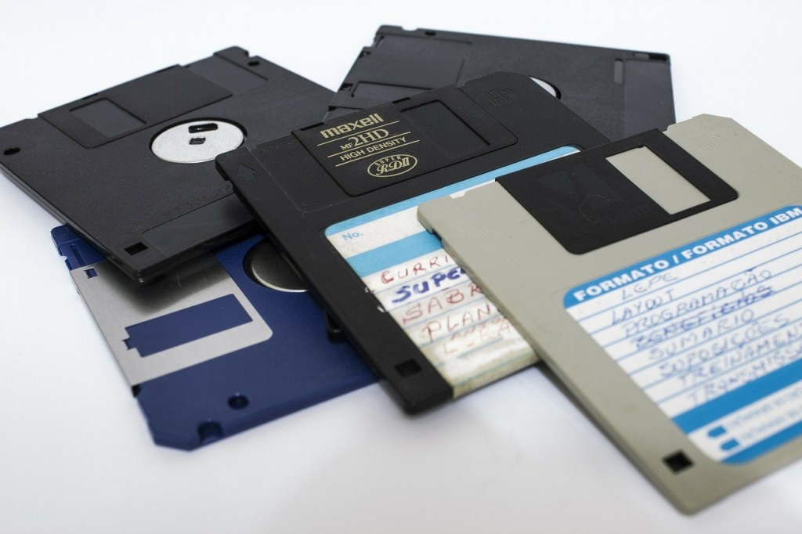

The disk drive is the most popular secondary storage device, and is found in both mainframe and microcomputer environments. The central mechanism of the disk drive is a flat disk, coated with a magnetizable substance. As this disk rotates, information can be read from or written to it by means of a head. The head is fixed on an arm and can move across the radius of the disk. Each position of the arm corresponds to a “track” on the disk, which can be visualized as one concentric circle of magnetic data. The data on a track is read sequentially as the disk spins underneath the head. There are quite a few different types of disk drives.
